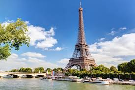
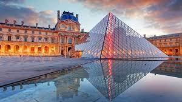
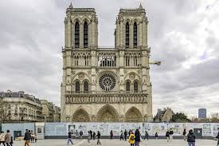
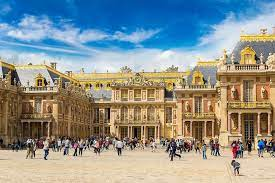
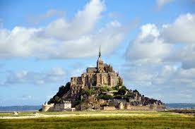
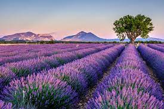

여행지 소개
프랑스 파리

파리의 관광명소 소개
파리 최고의 명소를 관광하며 여행을 시작하세요. 에펠탑, 루브르 박물관, 노트르담 대성당, 오르세 미술관, 에투알 개선문, 뤽상부르 공원, 생트샤펠을 둘러보고 인근 지역의 숨은 명소를 구경하면서 남은 시간을 보내세요!
프랑스는 세계적으로 유명한 관광지로 가득 차 있습니다. 명소들은 역사적인 유산, 아름다운 자연 풍경, 문화적인 경험 등 다양한 측면에서 매력적입니다. 다음은 프랑스의 몇 가지 주요 관광 명소입니다
- 에펠탑 (Eiffel Tower): 파리의 상징적인 랜드마크로, 세계에서 가장 유명한 탑 중 하나입니다.

- 루브르 박물관 (Louvre Museum): 세계 최대의 미술 및 예술 박물관으로, 대표적인 작품인 '모나리자'를 비롯해 다양한 예술품이 전시되어 있습니다.

- 노트르담 대성당 (Notre-Dame Cathedral): 파리의 중심에 위치한 고딕 양식의 대성당으로, 역사적으로 중요한 건축물 중 하나입니다.

- 베르사유 궁전 (Palace of Versailles): 파리 근교에 있는 이 궁전은 화려한 정원과 아름다운 궁전 건물로 유명합니다.

- 몽생미셸 (Mont Saint-Michel): 바다 위에 솟아 있는 작은 섬에 위치한 수도원이 있는 몽생미셸은 프랑스에서 가장 아름다운 풍경 중 하나입니다.

- 프로방스의 라벤더 밭 (Lavender Fields of Provence): 프로방스 지역은 아름다운 라벤더 밭으로 유명하며, 여름에는 화려한 보라색의 풍경이 펼쳐집니다.
